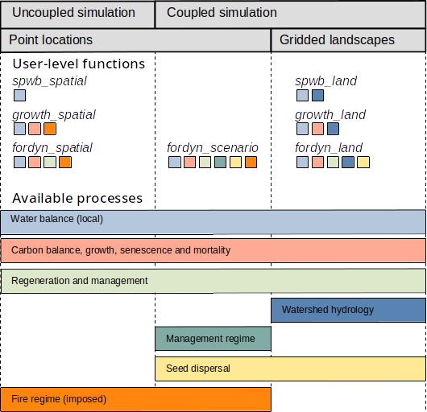

PackageOverview.RmdThe R package medfateland (v. 2.4.3) has been designed to facilitate running simulations of forest function and dynamics at the landscape to regional scales. The package allows executing the stand-level models available in the R package medfate on specific locations within a landscape, using either sequential or parallel computation. Spatial units are uncoupled in those simulations, where only local processes are represented. In addition, medfateland provides other functions that allow performing model simulations while accounting for processes relating different spatial units, such as lateral water transfer or seed dispersal.
In previous versions of medfateland package, data structures depended on package sp. Current versions of medfateland (ver. > 2.0.0) extensively use package sf (simple features) to represent spatial structures, where rows correspond to spatial units (normally point geometries) and columns include either model inputs (forest, soil, weather forcing) or model outputs. For simulations including lateral water transfer processes, spatial units need to conform to an incomplete or complete grid. In these cases, an additional input in form of a raster topology from package terra is required to specify the neighborhood between adjacent cells and cell size. Both spatial inputs need to share the coordinate projection system and there has to be an unambiguous correspondence between grid cells and sf rows.
The figure below provides an overview of simulation functions in medfateland and the processes available for each of them. Colored squares below each simulation function indicate the processes included.

The following details processes and functions. A complete documentation on the design and formulation of the simulation models and their inputs can be found at the medfate reference book.
The processes represented in simulations with medfateland can be divided between local and landscape processes. Examples of local water processes include rainfall, canopy interception, infiltration and runoff, percolation and deep drainage, soil evaporation and plant transpiration. Processes involved in carbon balance (photosynthesis, respiration) and forest dynamics are also local. Examples of landscape processes would be lateral surface flows, sub-surface flows or base flows. Seed dispersal is another example of landscape-level process, because generates spatial dependency between spatial units.
Local processes represented in wildland cells are those described of medfate package. Lateral water transfer processes and seed dispersal can be included in medfateland simulations to add spatial dependencies. Evapotranspiration and soil hydrology are also represented in agriculture locations, although in a strongly simplified manner, and lateral water transfer processes will also influence the water balance in agriculture locations. The remaining land covers are not the main focus of medfateland. They are relevant to determine the water transfer between neighboring cells but do not entail simulation of local processes.
Package medfateland allows performing simulations on multiple locations in a single function call. In addition, those simulations can be performed using parallel computing, because of the absence of landscape-level processes that would induce spatial dependency. Uncoupled simulation functions are detailed in the following sub-sections and examples are given in vignette Spatially-uncoupled simulations.
In package medfate, the local soil water balance of
a forest is primarily used to predict forest water flows and plant
drought stress; and the main simulation function is called
spwb(). Package medfateland extends the
former function by allowing the simulation of soil water balance for
multiple stands distributed spatially over a given time period using
function spwb_spatial(), which makes internal calls to
spwb() on elements the spatial classes introduced above.
Function spwb_spatial_day() is analogous to the former, but
is used for the simulation of a single day, using internal calls to
function spwb_day() of medfate. Function
spwb_spatial() and its one-day counterpart may be used
to:
Changes in leaf area, plant density and biomass are key to evaluate the influence of climatic conditions on forest function and dynamics. Processes affecting annual changes leaf area and plant size are those involved water and carbon balances, as well as those affecting growth directly. Processes influencing plant water balance include those affecting soil water content, such as rainfall, canopy interception, infiltration and runoff, percolation and deep drainage, soil evaporation and plant transpiration. Carbon balance arises from the relationship between plant photosynthesis and respiration, although carbon reserves play a role in the availability of carbon for growth. Water and carbon balances are coupled through the regulation of transpiration done by stomata. Plant growth is affected by the availability of carbon (source limitation), but also by temperature and water status (sink limitation). Leaf area of plants can be severely decreased by drought stress, causing an increase in dead leaf area and affecting carbon and water fluxes.
Package medfate allows simulating carbon balance,
growth and mortality of a set of plant cohorts (competing for light and
water) in a single forest stand using function growth().
Package medfateland extends the former function by
providing function growth_spatial(), which operates on
spatial classes and makes internal calls to function
growth(). Function growth_spatial_day() is
analogous to the former, but are used for the simulation of a single
day, using internal calls to function growth_day() of
medfate. Function growth_spatial() and its
one-day counterpart may be used to:
Changes in forest structure and composition result from the interplay of natural demographic processes (growth, mortality and recruitment) and natural or anthropogenic disturbances, including the effects of forest management.
Package medfate includes function
fordyn(), which allows simulating these processes at yearly
time steps on a given forest stand, building on previous models. Package
medfateland extends the former function by providing
function fordyn_spatial(), which operates on spatial
classes and make internal calls to function fordyn().
In addition to the former spatially-uncoupled simulation functions,
medfateland provides function
fordyn_scenario() for landscape to regional-scale
simulations. This function allows performing simulations of forest
function and dynamics for a set of forest stands, while coordinating
management actions in the set of stands following a timber demand-based
approach, which defines the amount of wood to be cut annually for target
tree species. In addition, stands are classified into management units,
which can be associated with different silvicultural practices.
Management decisions (as well as seed dispersal) are evaluated once a
year, which means that the simulation of processes occurring within a
year are spatially uncoupled. For this reason,
fordyn_scenario() makes internal calls to
fordyn_spatial() every year, where local simulations are in
parallel. These kind of simulations are illustrated in vignette Management
scenarios.
When input data is in form of continuous spatial variation of forests
over a landscape, typically a watershed, the
medfateland package allows performing local process
simulations while accounting for landscape processes. This is done using
functions spwb_land(), growth_land() and
fordyn_land(), which are analogous to
spwb_spatial(), growth_spatial() and
fordyn_spatial(), respectively. Similarly, functions
spwb_land_day() and growth_land_day() are
landscape counterparts of spwb_spatial_day() and
growth_spatial(), respectively.
Importantly, all these functions allow simulating lateral water transfer processes, for which two alternative sub-models are possible. A first sub-model, similar to TETIS (Francés et al. 2007) is offered by default, which includes three lateral water flows that are solved in simple way:
Alternatively, the same water transfer processes can be simulated via a coupling with SERGHEI (Caviedes-Voullième et al. 2023), a physically-based distributed hydrologic model with much greater physical detail. In that case, SERGHEI outputs are generated as files and are not provided with the output to the function call. Hence, the user is responsible for accessing and post-processing those outputs.
Functions spwb_land() and growth_land()
(and their single-day counterparts spwb_land_day() and
growth_land_day()) may be used to:
Determine areas where particular plant species have high vulnerability to suffer from drought stress or fire risk, while accounting for watershed hydrology.
Partition the total rainfall in given watershed among:
Function fordyn_land() includes seed dispersal as an
additional landscape process. Similarly to the relationship between
fordyn() and growth(),
fordyn_land() makes a call, once a year, to
growth_land(), which deals with all daily processes. After
that, dispersal, regeneration and forest management are simulated at the
level of fordyn_land(). This function may be used to:
Examples of watershed simulations including landscape processes are given in vignette Watershed simulations.